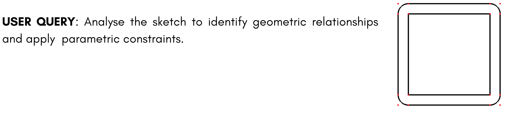
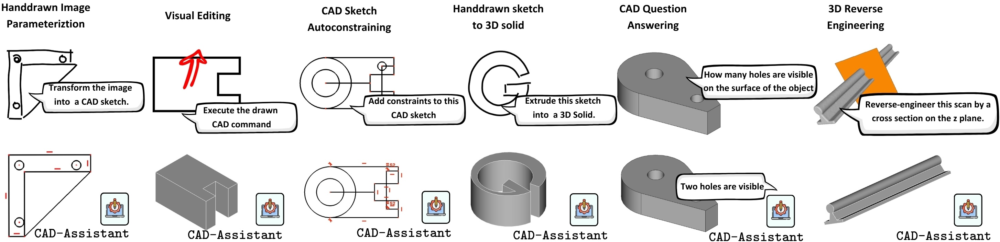

CAD-Assistant is a tool-augmented VLLM framework for AI-assisted CAD. Our framework generated FreeCAD code that is executed within CAD software directly and can process multimodal inputs, including textual queries, sketches, drawn commands and 3D scans. This figure showcases various examples of generic CAD queries and the responses generated by CAD-Assistant .
Abstract
We propose CAD-Assistant , a general-purpose CAD agent for AI-assisted design. Our approach is based on a powerful Vision and Large Language Model (VLLM) as a planner and a tool-augmentation paradigm using CADspecific tools. CAD-Assistant addresses multimodal user queries by generating actions that are iteratively executed on a Python interpreter equipped with the FreeCAD software, accessed via its Python API. Our framework is able to assess the impact of generated CAD commands on geometry and adapts subsequent actions based on the evolving state of the CAD design. We consider a wide range of CAD-specific tools including a sketch image parameterizer, rendering modules, a 2D cross-section generator, and other specialized routines. CAD-Assistant is evaluated on multiple CAD benchmarks, where it outperforms VLLM baselines and supervised task-specific methods. Beyond existing benchmarks, we qualitatively demonstrate the potential of tool-augmented VLLMs as general-purpose CAD solvers across diverse workflows.
How CADAssistant Works
CAD-Assistant is a tool-augmented framework that uses a vision-language model to plan CAD actions, enhanced by specialized tools for geometric reasoning and multimodal understanding. It generates CAD code via the FreeCAD API, iteratively refining actions based on the evolving design state. The followinng annimation shows the execution flow for autoconstraining. CAD-Assistant utilizes the sketch recognizer function for multimodal CAD understanding and generates constraints in a chain-of-thought manner.
General Framework
The CAD-Assistant framework can be described as follows: A multimodal user request \( x_0 \) is provided as context to a VLLM planner \( P \) that responds with a plan \( p_t \) and an action \( a_t \) (python code). The action is executed on an environment \( E \) equipped with CAD software. The output generated from the execution is then concatenated with the previously generated context and fed back to the planner, enabling the generation of the next iterative step. When \( x_0 \) has been successfully addressed, \( P \) generates \( P_T \) , a special TERMINATE plan that indicates the completion of CAD-Assistant’s response
Figure 1: Overview of CAD-Assistant.
CAD-Specific Tools
CAD-Assistant integrates a wide range of external CAD-specific modules, including a hand-drawn image parameterizer, rendering modules for multimodal CAD sequence understanding, a specialized utility for analysis of geometric constraints and a 2D cross-section generator for VLLM interaction with 3D scans. Our CAD-specific tool set is summarized in the following table:
| Tool | Description |
|---|---|
| Python Interpreter | Action format and logical operations. |
| FreeCAD | Integration with CAD software |
| Sketch Parameterizer | Hand-drawn sketch image to CAD sketch network |
| Sketch Recognizer | Renders sketch and plots parameters |
| Solid Recognizer | Renders a 3D CAD model and plots parameters. |
 Constraint Checker Constraint Checker |
Renders a 3D CAD model and plots parameters. |
| Crosssection Extract | Generates an image of a cross section from a 3D mesh. |
Real-World Applications
We identify new emerging capabilities of tool-augmented CAD agents and demonstrates their potential beyond existing benchmarks on real-world use cases. On the following Figure 2 (left) we showcase an example of our method utilizing the CAD commands Revolution and Fillet that are not included in existing datasets. Tool augmentation also allows interaction with multimodal inputs such as sketches and 3D scans. Figure 2 (center) showcases CAD-Assistant’s ability to process 3D scans along with textual queries to extract crosssections, parameterize features, and reverse engineer CAD 8models from scans. In Figure 2 (right), the VLLM planner determines to semantically interpret drawn operation directly without utilizing additional CAD-specific tools for fulfilling user requests. Note that generated FreeCAD code is interpretable, editable and easily extendable.

Figure 2: Real-world CAD use cases.
Results and Comparisons
To address the lack of benchmarks for tool use akin to specialized sets commonly used in other domains, this work adopts an evaluation setting for generic CAD agents leveraging multiple existing CAD tasks. Evaluations are conducted for 2D and 3D CAD question answering, auto-constraining, and hand-drawn CAD sketch image parametrization. CAD-Assistant outperforms both VLLM baselines and supervised taskspecific methods trained on large-scale datasets, despite being prompted in a zero-shot manner.
2D/3D CAD Question Answering Performance (SGPBench)
| Method | Planner | 2D Acc ↑ | 3D Acc↑ |
|---|---|---|---|
| SGPBench | GPT-4 mini | 0.594 | 0.737 |
| GPT-4 Turbo | 0.674 | 0.762 | |
| GPT-4o | 0.686 | 0.782 | |
| CAD-Assistant | GPT-4 mini | 0.614 | 0.783 |
| GPT-4 Turbo | 0.741 | 0.825 | |
| GPT-4o | 0.791 | 0.857 |
Auto-constraining Performance (SketchGraphs)
| Method | Type | PF1 ↑ | CF1 ↑ |
|---|---|---|---|
| GPT-4o | zero-shot | 0.693 | 0.274 |
| Vitruvion | supervised | 0.706 | 0.238 |
| CAD-Assistant | zero-shot | 0.979 | 0.484 |
Hand-drawn Image Parametrization Performance (SketchGraphs)
| Method | Acc ↑ | CD ↓ |
|---|---|---|
| Vitruvion | 0.659 | 1.586 |
| Davinci | 0.789 | 1.184 |
| CAD-Assistant | 0.784 | 0.680 |
BibTeX
@inproceedings{mallis2025cadassistant,
author = {Mallis, Dimitrios and Karadeniz, Ahmet Serdar and Cavada, Sebastian and Rukhovich, Danila and Foteinopoulou, Niki and Cherenkova, Kseniya and Kacem, Anis and Aouada, Djamila},
title = {{CAD-Assistant: Tool-Augmented VLLMs as Generic CAD Task Solvers}},
booktitle = {Proceedings of the IEEE/CVF International Conference on Computer Vision (ICCV)},
year = {2025}
}